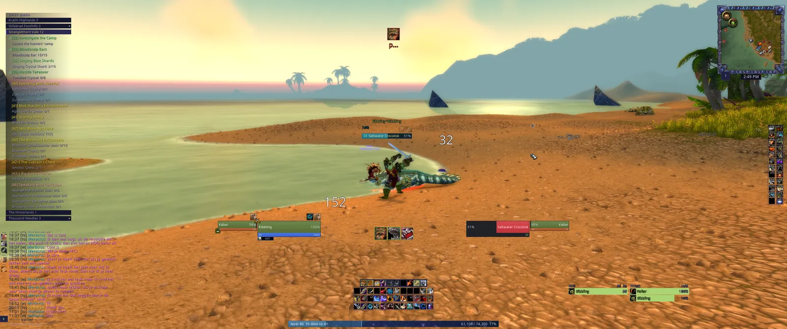
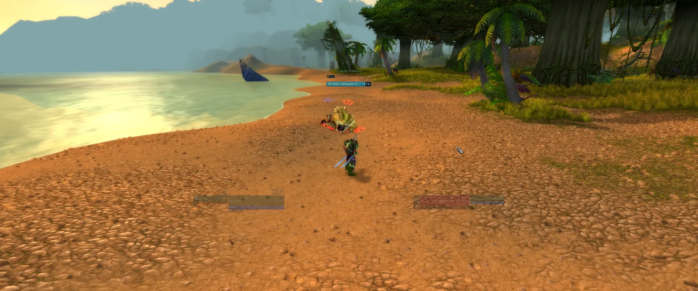
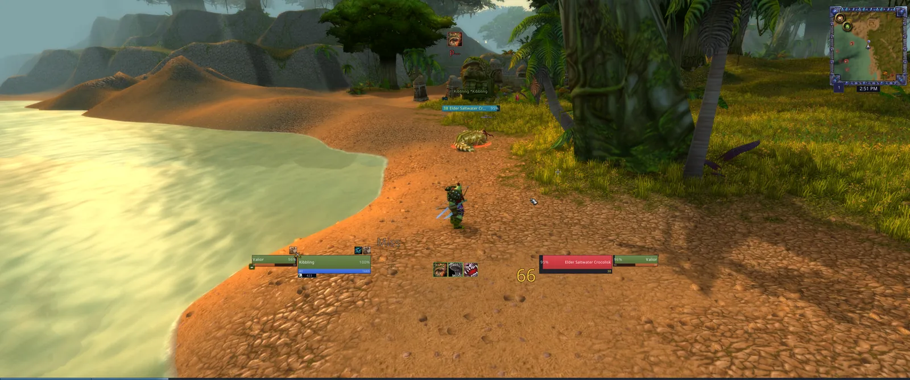
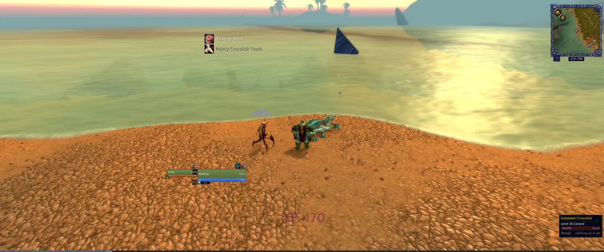

Themes, placing and profiles
How much of the addon is on the screen, what colour it wears, where each piece sits, and how to keep an arrangement you like.
What the wiggle is
Shake the mouse left and right and the whole screen changes.
That is the gesture the addon is named after. A theme decides how much of the addon is drawn, and each theme can name a second theme it swaps to. One shake swaps; the next shake swaps back. Out of the box the exploration theme wiggles to the informational one, so a screen that keeps your chat, your quest tracker, your bars and your meters under the pointer is one shake away from a screen that has all four up and the feeds with them.
A shake is read off the horizontal position of the pointer and nothing else, because a hand shaking a mouse is a sideways thing and a pointer on its way to a button turns at most once. Six turns inside 1.2 seconds is a shake, each leg at least 60 units long, and after one the detector is deaf for a second so a hand that keeps going does not answer itself. Nothing is sampled while you are holding the right button to turn the camera.
/wui wiggle <theme> sets what the theme you are in swaps to, and /wui wiggle none turns the gesture off, which also stops the addon reading the mouse at all. The full mechanics are under themes, below.
Moving things, and how big they are
/wui unlock everything up and draggable
/wui lock the theme back
/wui reset every frame where it startedUnlocking brings up every element the theme hides or fades, whole and at full alpha, so you can find it and drag it. Locking puts the theme back. This is how the frames are placed; nothing here is dragged with a modifier held except the action bars, which want shift because a bare drag on a bar is a drag of what is in it.
Sizes live under The screen, one row per thing that can be sized, and Everything at the top of the list multiplies the rest.
/wui scale list every screen and what it is drawn at
/wui scale everything 1.2 the lot
/wui scale <screen> <0.5-3> one of them, in tenthsThe grid already scales by your monitor's height, so 1 is the author's screen on your monitor rather than the author's screen in pixels. Numbers off the stops are refused rather than rounded, so /wui scale everything 1.3 says what the stops are instead of quietly becoming 1.25.
Themes, palettes and the wiggle
A theme is one decision about how much of the addon you see, taken for all twenty three elements at once instead of a tick box per page. Each element gets one of four answers:
show drawn as the part draws it
hide off the screen, but still running, so a key bound to a hidden bar still fires
hover invisible until the pointer is on it
0.2 drawn at that fraction of itself, any number above 0 and below 1The three themes:
informational draws everything, all of the time. This is the one for a new player and the one the wiggle target usually is.

Informational: quest tracker and chat down the left, bars along the bottom, the damage and threat meters on the right immersive is you and the game. Your frame and your target's at a fifth, and nothing else. Bags, the map, the character sheet and every other window you open still open, because a theme is about what is on the screen while you are not asking for anything.

Immersive: the same beach, the frames ghosted to a fifth, nothing else on the screen exploration is the middle. Chat, quests, the bars and the meters wait under the pointer, drops and messages still slide in, and the loot and combat feeds go, because a feed is read as it arrives and one you have to find with the mouse has already scrolled past.

Exploration mid fight: the frames, the enemy bar and the meters, and no chat or quest tracker The same screen a moment after the kill, with the drops sliding in and nothing else up:

Exploration after the kill: two loot rows top left, the frames, and the corpse tooltip
{kind=link}
{kind=link}
{kind=link}
{kind=link}
Each of the three, and the two other choices drawn at the same moment:
/wui theme informational|immersive|exploration
/wui palette dark|forest|desert|arcane|horde|alliance|fire|parchment
/wui gauges flat|modern
The colours card of the first login draws all eight against the same window, which is the fastest way to pick one. /wui palette is the same choice later.
All three take effect at the next /reload, and that is on purpose. Reading the choice once at load is what keeps a theme costing nothing after the loading screen: an element that is show in the theme you loaded and show in its wiggle target is never touched again for the rest of the session.
The wiggle is the exception, and it is why the swap is between exactly two themes rather than any theme to any other. Every element that either theme does anything to is put under a veil when it is built, and the shake changes the veil's alpha. That is cheap enough to happen mid-pull, which matters, because the pull is when you want your bars up.
/wui wiggle none|<theme>The target is saved per theme and takes effect the moment you set it, unlike the theme itself. Whether the wiggle is up is saved too, so a player who lives in the target does not shake the mouse after every loading screen.
One limit worth knowing. The client refuses two writes on a protected frame while you are in a fight: putting a veil on, and showing or hiding one. Alpha is not protected. So a frame that is already veiled and already on the screen redresses in combat exactly as it does out of it, which is the whole of the exploration to informational swap, and anything more waits for the fight to end and then happens.
Profiles, and putting it back
Every setting on this character, the theme and the window spots included, comes from one profile.
/wui profile which profile this character wears, and what else exists
/wui profile new <name> copy this one under a new name and wear it
/wui profile use <name> wear another, reloading
/wui profile delete <name>
/wui profile export|import a string, to hand a profile to somebody elseSwitching and deleting both ask first, because a dropdown pick is too easy a press for a reload and for something that cannot be undone.
Records are not settings and stay on the account: your groups, your mail favourites, the errors you muted, the flasks you track and the gold ledger.
/wui defaults how many settings are not what the addon ships with
/wui defaults yes put them back and reloaddefaults on its own only reports. It is also how a default that moved in an update reaches you, since your saved answer wins until you ask for the shipped one.